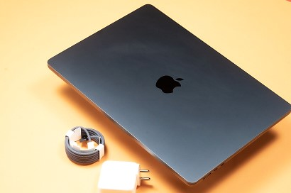
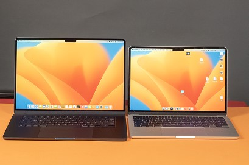
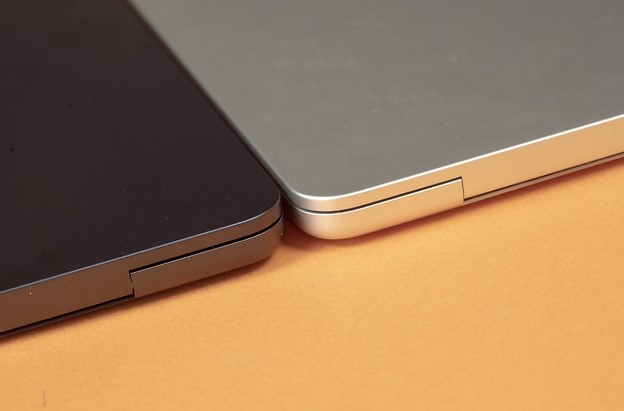
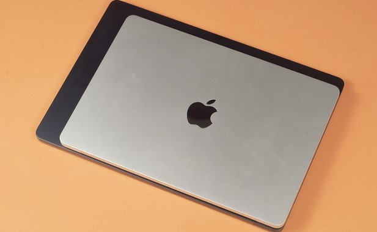
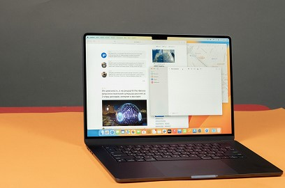

ru


MacBook Air 15: новая веха в мире ноутбуков от Apple
Apple продолжает впечатлять мир своими инновациями, и новый MacBook Air 15 не является исключением. Этот ноутбук не просто инструмент – это настоящий шедевр, сочетающий в себе премиальное качество, вдохновляющий стиль и передовые технологии, характерные для Apple.
Основываясь на лучших традициях компании, MacBook Air 15 продолжает радовать своих пользователей. Его ультратонкий алюминиевый корпус, безукоризненное исполнение и потрясающий дисплей Retina создают впечатляющий образ, который непревзойден в мире ноутбуков.
15-дюймовый дисплей с высоким разрешением подарит вам яркие и четкие изображения, сделает просмотр фильмов, редактирование фотографий и работу на ноутбуке невероятно приятными и комфортными.
Но что делает MacBook Air 15 по-настоящему мощным? Его сердце - новейший процессор Intel Core i7 в сочетании с графическим ускорителем Intel Iris Xe или дискретной графикой AMD Radeon Pro. Благодаря этому ноутбук обеспечивает безупречную производительность даже в самых требовательных приложениях
Но это еще не все. MacBook Air 15 имеет более длительное время автономной работы, что делает его идеальным для путешествий и работы вдали от розетки. Оптимизированное энергопотребление и емкий аккумулятор позволяют использовать ноутбук дольше без необходимости постоянной зарядки.
Кроме того, новый MacBook Air 15 оснащен широким спектром современных портов и интерфейсов, включая Thunderbolt 4 и USB-C, что делает его универсальным для подключения внешних устройств и периферии.
